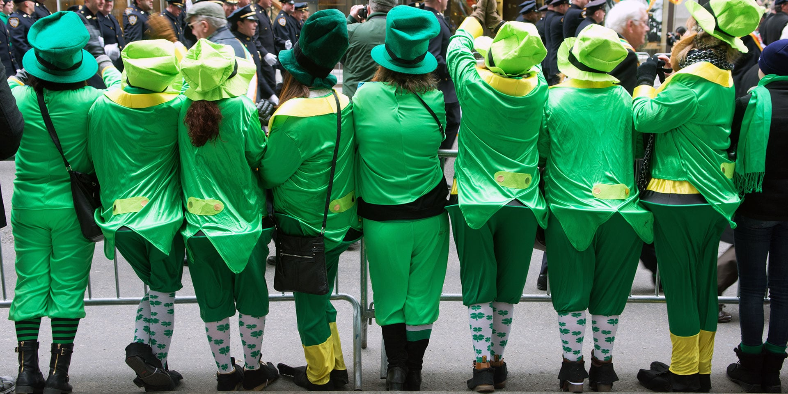

Saint Patrick's Day
Celebration and traditions

Today's Saint Patrick's Day celebrations have been greatly influenced by those that developed among the Irish diaspora, especially in North America. Until the late 20th century, Saint Patrick's Day was often a bigger celebration among the diaspora than it was in Ireland. Celebrations generally involve public parades and festivals, Irish traditional music sessions (céilithe), and the wearing of green attire or shamrocks. There are also formal gatherings such as banquets and dances, although these were more common in the past. Saint Patrick's Day parades began in North America in the 18th century but did not spread to Ireland until the 20th century. The participants generally include marching bands, the military, fire brigades, cultural organisations, charitable organisations, voluntary associations, youth groups, fraternities, and so on. However, over time, many of the parades have become more akin to a carnival. More effort is made to use the Irish language, especially in Ireland, where the week of Saint Patrick's Day is "Irish language week". Since 2010, famous landmarks have been lit up in green on Saint Patrick's Day as part of Tourism Ireland's "Global Greening Initiative" or "Going Green for St Patrick´s Day". The Sydney Opera House and the Sky Tower in Auckland were the first landmarks to participate and since then over 300 landmarks in fifty countries across the globe have gone green for Saint Patricks day. Christians may also attend church services, and the Lenten restrictions on eating and drinking alcohol are lifted for the day. Perhaps because of this, drinking alcohol – particularly Irish whiskey, beer, or cider – has become an integral part of the celebrations. The Saint Patrick's Day custom of "drowning the shamrock" or "wetting the shamrock" was historically popular, especially in Ireland. At the end of the celebrations, a shamrock is put into the bottom of a cup, which is then filled with whiskey, beer, or cider. It is then drunk as a toast to Saint Patrick, Ireland, or those present. The shamrock would either be swallowed with the drink or taken out and tossed over the shoulder for good luck.
Green Clothes
The colour green was further associated with Ireland from the 1640s, when the green harp flag was used by the Irish Catholic Confederation. James Connolly would later describe this flag. prior to the 1916 Easter Rising, as representing "the scared emblem of Ireland's unconquered soul". Green ribbons and shamrocks have been worn on St Patrick's Day since at least the 1680s. The Friendly Brothers of St Patrick, an Irish fraternity founded in about 1750, adopted green as its colour. However, when the Order of St. Patrick—an Anglo-Irish chivalric order—was founded in 1783 it adopted blue as its colour, which led to blue being associated with St Patrick. During the 1790s, green would become associated with Irish nationalism, due to its use by the United Irishmen. This was a republican organisation—led mostly by Protestants but with many Catholic members—who launched a rebellion in 1798 against British rule. Ireland was described as the "the Emerald Isle" for the first time in print in "When Erin First Rose" (1795), a poem by co-founder of the United Irishmen William Drennan, which stresses the historical importance of green to the Irish. The phrase "wearing of the green" comes from a song of the same name, which laments United Irishmen supporters being persecuted for wearing green. The late nineteenth and early twentieth centuries have seen the re-emergence of Irish cultural symbols, such as the Irish Language, Irish mythology, Irish folklore, and the colour green, through the Gaelic Revival and the Irish Literary Revival which served to stir Irish nationalist sentiment. The influence of green was more prominently observable in the flags of the 1916 Easter Rising such as the Sunburst flag, the Starry Plough Banner, and the Proclamation Flag of the Irish Republic which was flown over the General Post Office, Dublin together with the Irish Tricolour. When Ireland did achieve its independence in 1922, the first act by the new Saorstát Éireann (Irish Free State) government was to order all the post boxes to be painted 'Saorstát green' (as it was described), under the slogan "Green paint for a green people"; in 1924, the government introduced a green Irish passport for Irish citizens, and it would remain this colour until the introduction of the burgundy coloured European Passports in 1985. Throughout these centuries, the colour green and its association with St Patrick's Day grew.
Saint Patrick's Day Around The World
Ireland
Saint Patrick's feast day, as a kind of national day, was already being celebrated by the Irish in Europe in the ninth and tenth centuries. In later times, he became more and more widely seen as the patron of Ireland. Saint Patrick's feast day was finally placed on the universal liturgical calendar in the Catholic Church due t o the influence of Waterford-born Franciscan scholar Luke Wadding[59] in the early 1600s. Saint Patrick's Day thus became a holy day of obligation for Roman Catholics in Ireland. It is also a feast day in the Church of Ireland, which is part of the worldwide Anglican Communion. The church calendar avoids the observance of saints' feasts during certain solemnities, moving the saint's day to a time outside those periods. St Patrick's Day is occasionally affected by this requirement, when 17 March falls during Holy Week. This happened in 1940, when Saint Patrick's Day was observed on 3 April to avoid it coinciding with Palm Sunday, and again in 2008, where it was officially observed on 15 March.[60] St Patrick's Day will not fall within Holy Week again until 2160.[61][62] However, the popular festivities may still be held on 17 March or on a weekend near to the feast day.
In 1903, St Patrick's Day became an official public holiday in Ireland. This was thanks to the Bank Holiday (Ireland) Act 1903, an act of the United Kingdom Parliament introduced by Irish Member of Parliament James O'Mara. O'Mara later introduced the law which required that public houses be shut on 17 March after drinking got out of hand, a provision that was repealed in the 1970s. The first St Patrick's Day parade in Ireland was held in Waterford in 1903. The week of St Patrick's Day 1903 had been declared Irish Language Week by the Gaelic League and in Waterford they opted to have a procession on Sunday 15 March. The procession comprised the Mayor and members of Waterford Corporation, the Trades Hall, the various trade unions and bands who included the 'Barrack St Band' and the 'Thomas Francis Meagher Band'. The parade began at the premises of the Gaelic League in George's St and finished in the Peoples Park, where the public were addressed by the Mayor and other dignitaries.[65][66] On Tuesday 17 March, most Waterford businesses—including public houses—were closed and marching bands paraded as they had two days previously. The Waterford Trades Hall had been emphatic that the National Holiday be observed. On St Patrick's Day 1916, the Irish Volunteers—an Irish nationalist paramilitary organisation—held parades throughout Ireland. The authorities recorded 38 St Patrick's Day parades, involving 6,000 marchers, almost half of whom were said to be armed. The following month, the Irish Volunteers launched the Easter Rising against British rule. This marked the beginning of the Irish revolutionary period and led to the Irish War of Independence and Civil War. During this time, St Patrick's Day celebrations in Ireland were muted, although the day was sometimes chosen to hold large political rallies. The celebrations remained low-key after the creation of the Irish Free State; the only state-organized observance was a military procession and trooping of the colours, and an Irish-language mass attended by government ministers. In 1927, the Irish Free State government banned the selling of alcohol on St Patrick's Day, although it remained legal in Northern Ireland. The ban was not repealed until 1961. The first official, state-sponsored St Patrick's Day parade in Dublin took place in 1931. On three occasions, parades across the Republic of Ireland have been cancelled from taking place on St Patrick's Day, with all years involving health and safety reasons. In 2001, as a precaution to the foot-and-mouth outbreak, St Patrick's Day celebrations were postponed to May and in 2020 and 2021, as a consequence to the severity of the COVID-19 pandemic, the St Patrick's Day Parade was cancelled outright. Organisers of the St Patrick's Day Festival 2021 will instead host virtual events around Ireland on their SPF TV online channel. A St Patrick's Day religious procession in Downpatrick, where Saint Patrick is said to be buried In Northern Ireland, the celebration of St Patrick's Day was affected by sectarian divisions. A majority of the population were Protestant Ulster unionists who saw themselves as British, while a substantial minority were Catholic Irish nationalists who saw themselves as Irish. Although it was a public holiday, Northern Ireland's unionist government did not officially observe St Patrick's Day. During the conflict known as the Troubles (late 1960s–late 1990s), public St Patrick's Day celebrations were rare and tended to be associated with the Catholic community. In 1976, loyalists detonated a car bomb outside a pub crowded with Catholics celebrating St Patrick's Day in Dungannon; four civilians were killed and many injured. However, some Protestant unionists attempted to 're-claim' the festival, and in 1985 the Orange Order held its own St Patrick's Day parade. Since the end of the conflict in 1998 there have been cross-community St Patrick's Day parades in towns throughout Northern Ireland, which have attracted thousands of spectators. In the mid-1990s the government of the Republic of Ireland began a campaign to use St Patrick's Day to showcase Ireland and its culture.
England
In England, the British Royals traditionally present bowls of shamrock to members of the Irish Guards, a regiment in the British Army, following Queen Alexandra introducing the tradition in 1901. Since 2012 the Duchess of Cambridge has presented the bowls of shamrock to the Irish Guards. While female royals are often tasked with presenting the bowls of shamrock, male royals have also undertaking the role, such as King George VI in 1950 to mark the 50th anniversary of the formation of the Irish Guards, and in 2016 the Duke of Cambridge in place of his wife. Fresh Shamrocks are presented to the Irish Guards, regardless of where they are stationed, and are flown in from Ireland. While some Saint Patrick's Day celebrations could be conducted openly in Britain pre 1960s, this would change following the commencement by the IRA's bombing campaign on mainland Britain and as a consequence this resulted in a suspicion of all things Irish and those who supported them which led to people of Irish descent wearing a sprig of shamrock on Saint Patrick's day in private or attending specific events. Today after many years following the Good Friday Agreement, people of Irish descent openly wear a sprig of shamrock to celebrate their Irishness. Christian denominations in Great Britain observing his feast day include The Church of England and the Roman Catholic Church. Birmingham holds the largest Saint Patrick's Day parade in Britain with a city centre parade over a two-mile (3 km) route through the city centre. The organisers describe it as the third biggest parade in the world after Dublin and New York. London, since 2002, has had an annual Saint Patrick's Day parade which takes place on weekends around the 17th, usually in Trafalgar Square. In 2008 the water in the Trafalgar Square fountains was dyed green. In 2020 the Parade was cancelled due to the COVID-19 pandemic. Liverpool has the highest proportion of residents with Irish ancestry of any English city. This has led to a long-standing celebration on St Patrick's Day in terms of music, cultural events and the parade. Manchester hosts a two-week Irish festival in the weeks prior to Saint Patrick's Day. The festival includes an Irish Market based at the city's town hall which flies the Irish tricolour opposite the Union Flag, a large parade as well as a large number of cultural and learning events throughout the two-week period.
Malta
The first Saint Patrick's Day celebrations in Malta took place in the early 20th century by soldiers of the Royal Dublin Fusiliers who were stationed in Floriana. Celebrations were held in the Balzunetta area of the town, which contained a number of bars and was located close to the barracks. The Irish diaspora in Malta continued to celebrate the feast annually. Today, Saint Patrick's Day is mainly celebrated in Spinola Bay and Paceville areas of St Julian's, although other celebrations still occur at Floriana and other locations. Thousands of Maltese attend the celebrations, which are more associated with drinking beer than traditional Irish culture.
Russia
The first Saint Patrick's Day parade in Russia took place in 1992. Since 1999, there has been a yearly "Saint Patrick's Day" festival in Moscow and other Russian cities. The official part of the Moscow parade is a military-style parade and is held in collaboration with the Moscow government and the Irish embassy in Moscow. The unofficial parade is held by volunteers and resembles a carnival. In 2014, Moscow Irish Week was celebrated from 12 to 23 March, which includes Saint Patrick's Day on 17 March. Over 70 events celebrating Irish culture in Moscow, St Petersburg, Yekaterinburg, Voronezh, and Volgograd were sponsored by the Irish Embassy, the Moscow City Government, and other organisations. In 2017, the Russian Orthodox Church added the feast day of Saint Patrick to its liturgical calendar, to be celebrated on 30 March.
Bosnia and Herzegovina
Sarajevo, the capital city of Bosnia and Herzegovina has a large Irish expatriate community. The community established the Sarajevo Irish Festival in 2015, which is held for three days around and including Saint Patrick's Day. The festival organizes an annual a parade, hosts Irish theatre companies, screens Irish films and organizes concerts of Irish folk musicians. The festival has hosted numerous Irish artists, filmmakers, theatre directors and musicians such as Conor Horgan, Ailis Ni Riain, Dermot Dunne, Mick Moloney, Chloë Agnew and others.
Switzerland
While Saint Patrick's Day in Switzerland is commonly celebrated on 17 March with festivities similar to those in neighbouring central European countries, it is not unusual for Swiss students to organise celebrations in their own living spaces on Saint Patrick's Eve. Most popular are usually those in Zurich's Kreis 4. Traditionally, guests also contribute with beverages and dress in green.
Japan
Saint Patrick's parades are now held in many locations across Japan. The first parade, in Tokyo, was organised by The Irish Network Japan (INJ) in 1992.
United States
Saint Patrick's Day, while not a legal holiday in the United States, is nonetheless widely recognised and observed throughout the country as a celebration of Irish and Irish-American culture. Celebrations include prominent displays of the colour green, religious observances, numerous parades, and copious consumption of alcohol. The holiday has been celebrated in what is now the U.S since 1601. In 2020, for the first time in over 250 years, the parade in New York City, the largest in the world, was postponed due to concerns about the COVID-19 pandemic.
International Space Station
Astronauts on board the International Space Station have celebrated the festival in different ways. Irish-American Catherine Coleman played a hundred-year-old flute belonging to Matt Molloy and a tin whistle belonging to Paddy Moloney, both members of the Irish music group The Chieftains, while floating weightless in the space station on Saint Patrick's Day in 2011. Her performance was later included in a track called "The Chieftains in Orbit" on the group's album, Voice of Ages. Chris Hadfield took photographs of Ireland from Earth orbit, and a picture of himself wearing green clothing in the space station, and posted them online on Saint Patrick's Day in 2013. He also posted online a recording of himself singing "Danny Boy" in space.